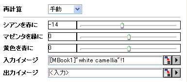

内容 |
バランス
画像のカラーバランス
1. imgBalance c2r:=10 m2g:=40 y2b:=30 oimg:=<new>;
2. imgbalance c2r:=10 m2g:=40 y2b:=30 img:=[Mbook1]Msheet1!Mat(1);
| 表示 名 |
変数 名 |
I/O と データ型 |
デフォルト 値 |
説明 |
|---|---|---|---|---|
| シアンを赤に | c2r |
入力 int |
0 |
Rチャネルのカラーレベルを変更する方法を指定します。この値は -100から100までで指定します。正の値は赤い色を少し加え、負の値はシアンを少し加えます。 |
| マゼンタを緑に | m2g |
入力 int |
0 |
Gチャネルのカラーレベルを変更する方法を指定します。この値は -100から100までで指定します。正の値は緑色を少し加え、負の値はマゼンタを少し加えます。 |
| 黄色を青に | y2b |
入力 int |
0 |
Bチャネルのカラーレベルを変更する方法を指定します。この値は -100から100までで指定します。正の値は青色を少し加え、負の値は黄色を少し加えます。 |
| 入力イメージ | img |
入力 Image |
<active> |
操作する画像を指定します。デフォルトの入力はアクティブイメージです。 |
| 出力イメージ | oimg |
出力 Image |
<input> |
出力画像を指定します。デフォルトで、出力画像は入力画像と同じです。 |
imgBalnce関数は、入力画像のカラーレベルを変更します。これを使って、カラーバランスを適用することができます。例えば、入力画像が赤みがかっている場合、この関数を使って、赤みを少なくし、色を改善します。
入力画像は赤みがかっています。 関数を使って、赤を少なくします。入力画像がアクティブなとき、「イメージ：調整：カラーバランス」を選び、「imgBalance」ダイアログを開きます。このダイアログで、下記のスクリーンショットのように設定を変更し、OK をクリックして、ダイアログを閉じます。

すると、出力画像は下のようになります。
|
原画像 |
出力画像 |
他のサンプルについては、XFスクリプトダイアログ(F11を押す)をご覧下さい。
入力画像の各ピクセルに対して、赤、緑、青の値が修正されます。修正は、シアンを赤に、マゼンタを緑に、黄色を青に、の変数で制御されます。
詳細は、LEADTOOLS Main API Version 14 ヘルプファイルを参照し、トピックL_BalanceColorsを読んでください。
LEADTOOLS Main API Help file, Version 14